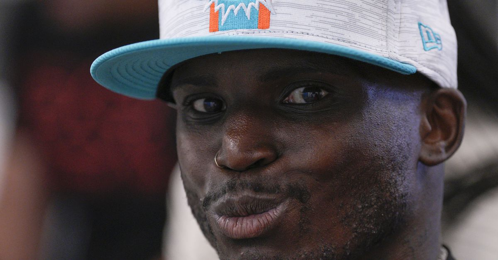
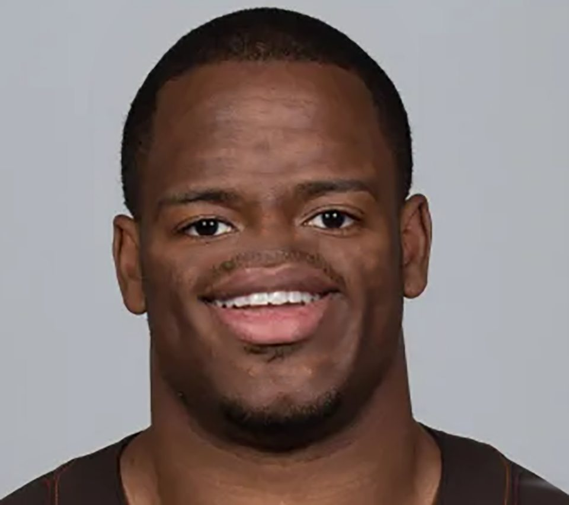
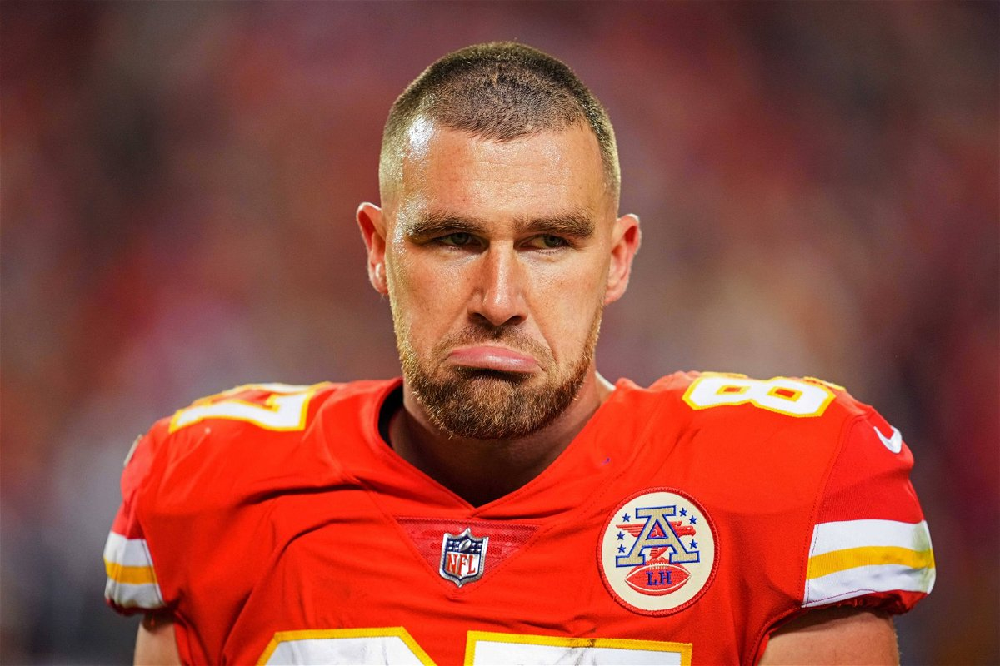
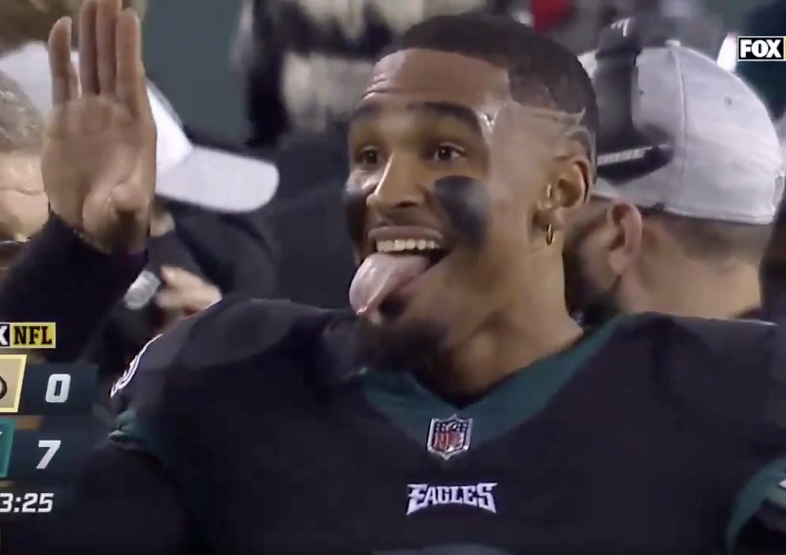
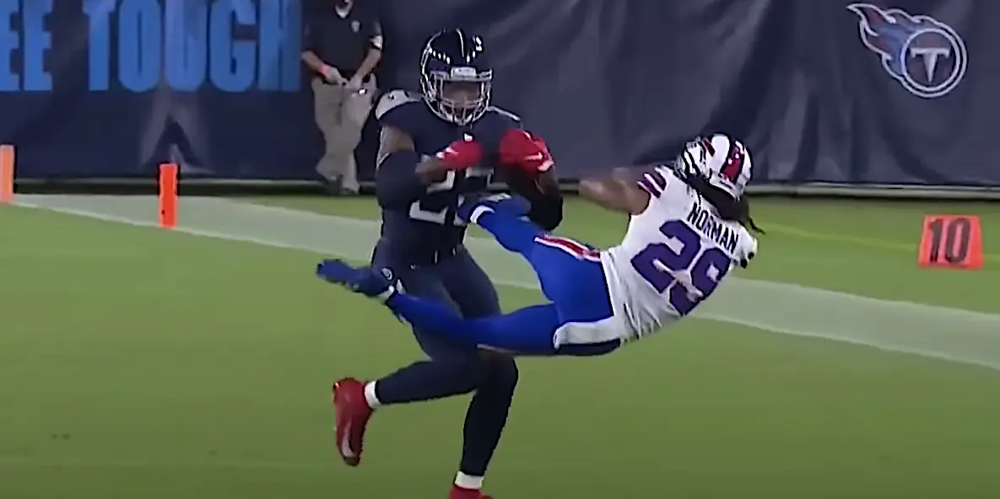
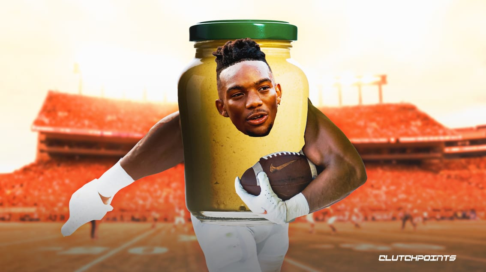
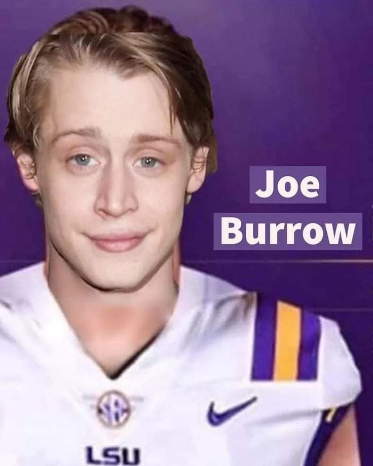
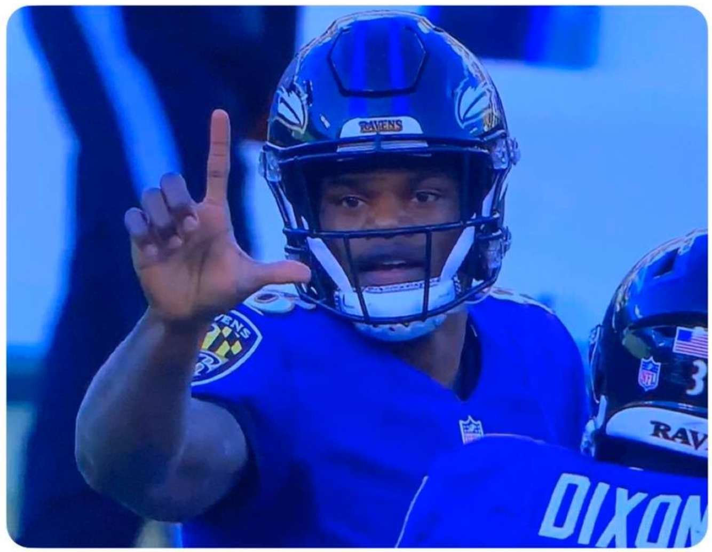

Well, well, well Fantasy Fucks. PJ and Joel are back to give you the week 2 power rankings and hot takes. Week one is in the books and we may have seen the highest and lowest points scored for the league this year.
Matchup of the Week: Hot off big opening day wins we have Exotic Engrams vs. 8=D. PJ will be looking to grow another inch and Jake will be looking for another exotic performance from Tyreeeeeeek.
Waiver Wire Wizard: Looking at all the activity on the wire this week it’s hard to pass up Zay Jones for a measly $7. Zay looks like he could be the Jaguar’s number two option. This could help Pangy in the long run.
Cries for Help: There are some teams reeling from their week one shit shows. Spending $22 on Kyren Williams who had 52 yards and is splitting the backfield work with Cam Akers (22 touches) is a clear cry for help. Honorable mention is snagging Micheal Thomas for $17. Hope you get more than a week of production from him Neil.
What a wild week of football. Let’s get to the .... WEEK TWO POWER RANKINGS
1. Exotic Engrams (1-0) ⬆️
The destiny doucher pulls out a massive week one win in a very 💥BOOM 💥 week. This team looks scary stacked at the Running Back position. Tony Pollard, Jahmyr Gibbs, Aaron Jones, Kamara on the bench. The Wide Receiver room looks a bit more shaky but could be carried all season by Tyreek Hill scoring an insane amount of points. Zach Wilson now leading the Jets puts a big question on the production of Garrett Wilson. Garrett averages 7.7 points with Zach under center. Yikes.

2. 8=D (1-0) ⬇️
PJ had a great starting week carried by his Wide Receivers. Aiyuk and Jefferson both performed outstanding and could be a scary duo. He made a great move with his streaming tight end and was able to beat the Dallas D. It was no surprise to see the Allgeier pick up as the Running Back room needs some help - but that is probably only going to work for a couple more weeks (Bijan). The Breece Hall stock could be going up on a Tuesday thanks to missing Rodgers. Can Mark Andrews stay healthy?
3. Jus-Jonzin-4-Herb (1-0) ⬆️⬆️⬆️⬆️⬆️⬆️⬆️
Starting off week one strong by defeating the defending champion* Ekler had a strong performance but he was splitting carries and needs to continue with this level of production for 16 more games. Amon Ra will be a solid option week in and week out. Deebo looks like he could fall to the 4th option on the explosive 49ers offense. Drafting Pitts in the 6th is still unforgivable. There’s a lot to keep an eye on with this team. It could be a very up and down season for Andy.
4. Thielen Mahomies Chubb (1-0) ⬆️⬆️⬆️⬆️
This might be the only time we can put Kris this high in the power rankings. The team has a lot to hate about it but he salvaged his first week by squeaking out a win. If Josh Allen hadn’t thrown more completions to the Jets than Aaron Rodgers did, this would be a completely different story. Starting two Seahawks receivers is just a bad play. Mattison salvaged a terrible day with a touchdown. His 9th pick in the draft had a pathetic 5 points. Chubb and Ridley look to be solid options that could carry the team to a couple more wins. I hate this team.

5. Buttery Charbonnet (0-1) ⬇️⬇️
This is a team to be feared and there is lots to love. The Quarterback Josh Allen, Running Back CMC, and Tight End Kelce could all be the number one’s each week and it would be no surprise. Can the supporting cast pull through enough points to send him to the W column each week? Can this team avoid the injury bug? Tony could move his way up the power rankings next week.

6. Hurts Donut (0-1) ↔️
The top performing loser of the week stays seated at number 6. The Dallas Defense took a disappointing scoring week to one that would beat most teams any other week. Jacobs is surely to bounce back. Olave and Hopkins are two solid starters even without tallying a touchdown. The Hurts and Goedert connection was missing week one and will need to show up next week to avoid streaming Tight Ends.

7. Tua Williams One Kupp (0-1) ↔️
Great performances from Tua and Etienne. There is a huge question mark on Kupp’s head this year. Will it matter though with being able to keep Jamarr Chase in the 4th? DJ Moore probably aint it… as a matter of fact the Bears aint it. There will be a lot of up and downs week-to-week. The sexual predator is waiting in the wings if Tua hits his head on the turf again.

8. Diggin that Bijan mustard (0-1) ⬆️
Bijan looks like someone had fun with create a player in Madden. The Atlanta offense is run heavy and the front runner for ROY is going to score this team a lot of points. Stefon Diggs is obviously Josh Allen’s favorite receiver and that should bode well for the year. The biggest issue this team has is the bench strength. It doesn’t exist. Chris is going to be praying that Jonathan Taylor gets traded by the time he comes off IR. RIP JK Dobbins.

9. Sweet Brutha Numpsay (1-0) ⬇️⬇️⬇️⬇️
Mr. Auto Draft somehow wins in an abysmal week one. Rhamondre Stevenson looked good. Brown and Adams are clearly good enough to fill out his receiver room. However, there is a lot to figure out to balance this team. Pangy obviously feels the same as he bid on almost every player on the waiver and was able to make a couple of additions. The not so bright spot, is even if he played the Eagles D, he would’ve only scored 84 points. Woof.

10. Unpaid Bills 🍆 (0-1) ⬇️⬇️⬇️⬇️⬇️⬇️
🚨SLUTLER ALERT!🚨 Neil is the first one knocked out of the survivor pool by only scoring.... 62.86 points. The running back room leaves a lot to be desired. The receivers are.. meh. There are some bright spots that may help Neil avoid being a dirty little slut. Pickens’ role is going to increase with Johnson out. Michael Thomas will be good for a couple of weeks before he gets hurt. Higgins will eventually catch a pass. Drake London.. well… that’s just bad business.

Good luck to everyone besides Jake and Kris - PJ and Joel 💋
“Josh Allen just ran into his own guy and fumbled… weird 🤷”
- Mark Sanchez, September 11th 2023